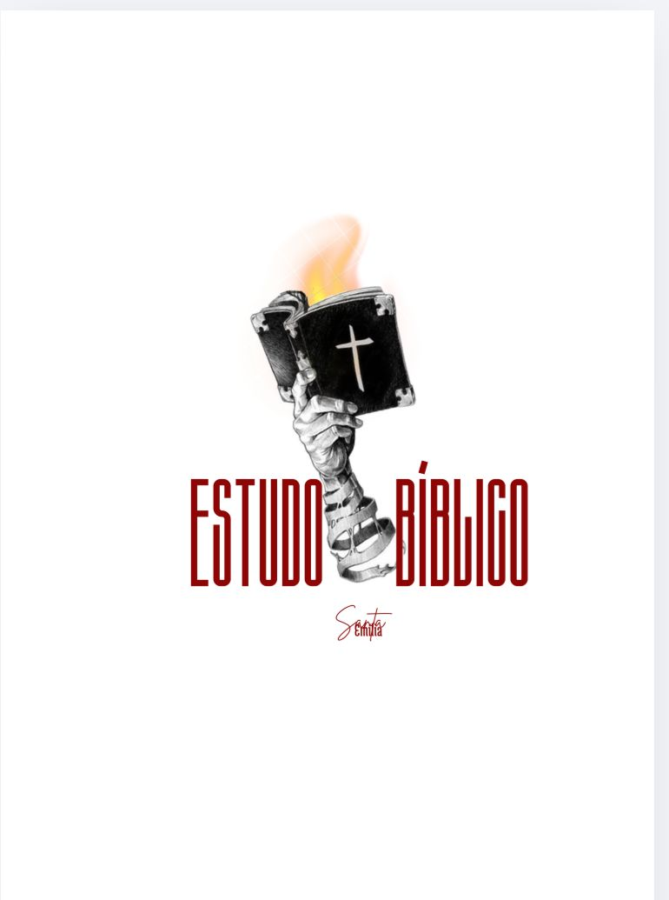
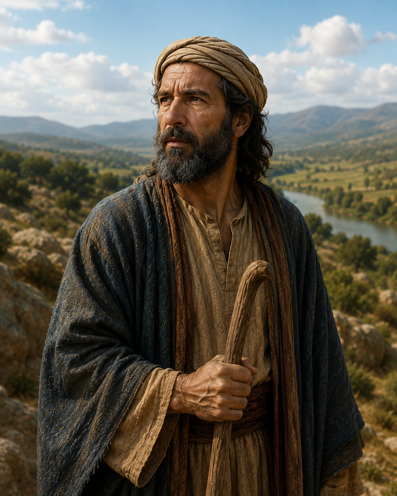
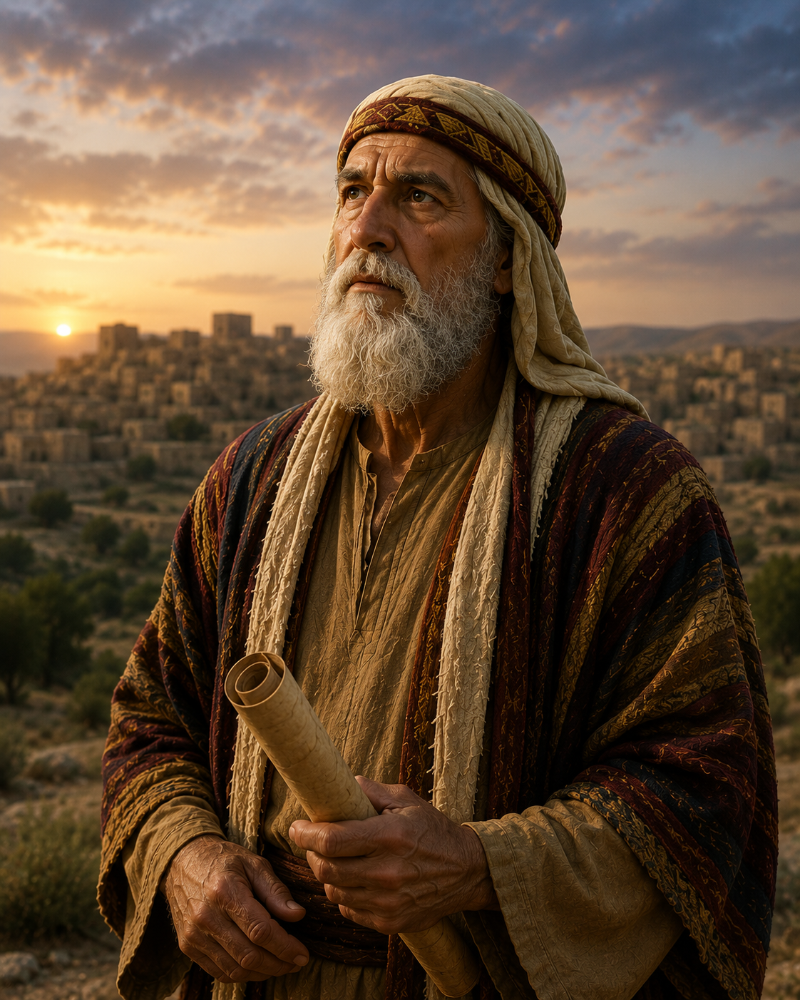
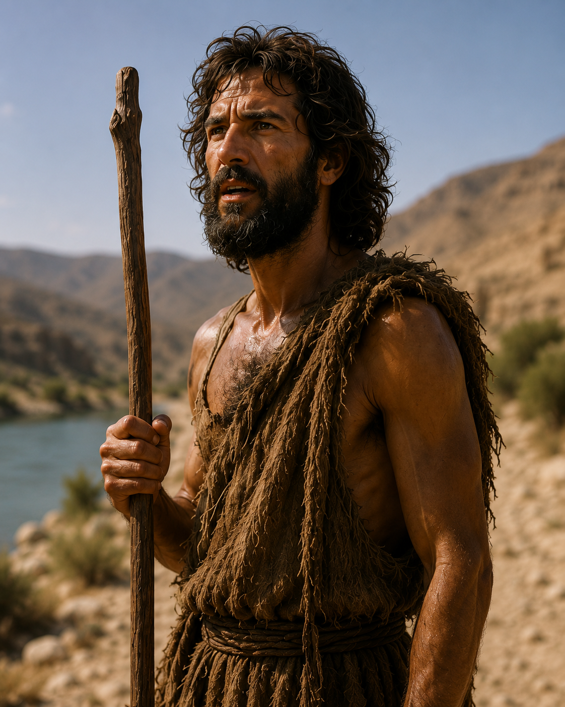
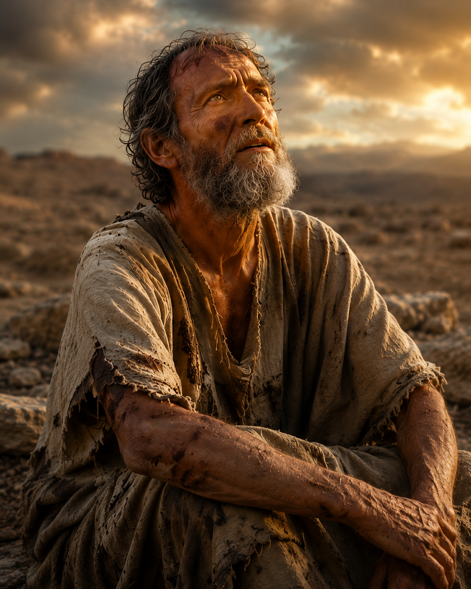
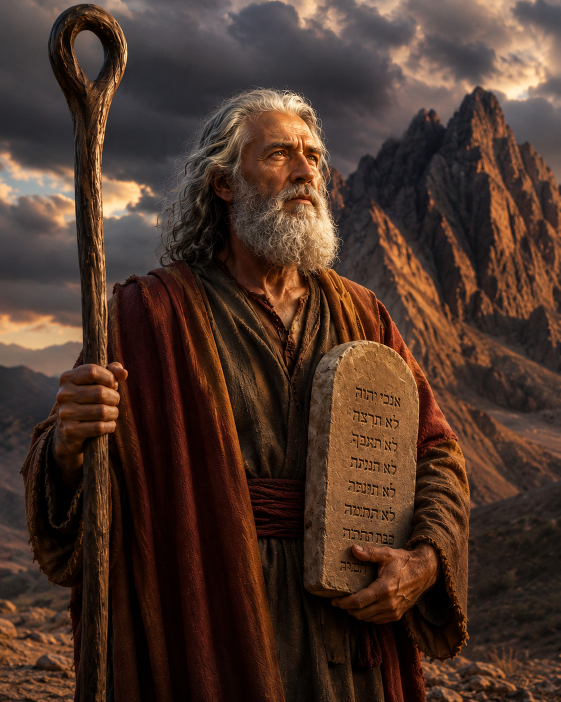
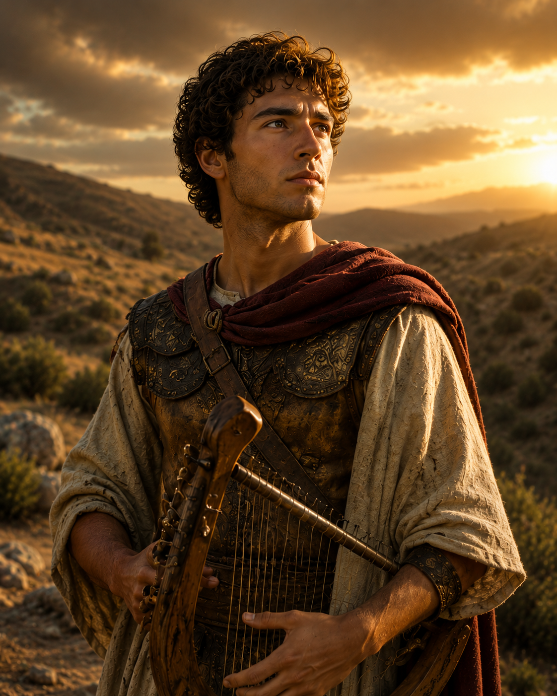

Entender o texto
Contexto, observação e explicação sem complicar a leitura.

Estudo BíblicoEncontros simples, profundos e acolhedores para ler a Bíblia com clareza, orar com sinceridade e viver a Palavra durante a semana.
Nosso propósito
Contexto, observação e aplicação para cada texto — de forma acessível e profunda.
Contexto, observação e explicação sem complicar a leitura.
O estudo termina em conversa sincera com Deus.
Um ambiente para perguntas, cuidado e crescimento em grupo.

Próximo encontro
Traga sua Bíblia, um caderno e o coração disponível. Cada encontro tem leitura guiada, conversa em grupo e uma aplicação para a semana.
Trilhas de estudo
Conteúdo preparado para estudo pessoal, célula e discipulado.

Conheça Jesus pelos encontros, discursos e sinais do evangelho.

Aprenda a levar alegria, medo, dor e gratidão diante de Deus.

Doutrinas essenciais para uma caminhada firme e madura.
Os Profetas
~870 a.C.
O Profeta de Fogo
Chamou fogo do céu, confrontou o rei Acabe e os 450 profetas de Baal. Foi arrebatado vivo ao céu sem morrer — seu retorno foi profetizado em João Batista.
1 Reis 17–21 · Malaquias 4:5

~850 a.C.
O Profeta dos Milagres
Sucessor de Elias, realizou o dobro dos milagres do mestre — 16 registrados. Curou Naamã o sírio, ressuscitou mortos e multiplicou óleo para uma viúva endividada.
2 Reis 2–13

~1050 a.C.
Juiz, Sacerdote e Profeta
Ungiu Saul e Davi — inaugurou a era monárquica de Israel. Ouviu a voz de Deus desde criança e estabeleceu o padrão da fidelidade à Palavra por toda a sua vida.
1 Samuel 3:20 · Atos 3:24
~1000 a.C.
Profeta da Correção e da Aliança
Confrontou Davi pelo pecado com Bate-Seba com coragem e amor. Anunciou a Aliança Davídica — a promessa de um Rei eterno do trono de Davi, cumprida em Jesus Cristo.
2 Samuel 7 · 2 Samuel 12:1–14

Novo Testamento · ~28 d.C.
A Voz que Clama no Deserto
"Entre os nascidos de mulher não há maior profeta." Preparou o caminho do Senhor, apontou para o Cordeiro de Deus — e então se apagou para que Cristo crescesse.
Isaías 40:3 · Mateus 11:11 · João 1:29
Usados por Deus
Objetos simples nas mãos de Deus se tornaram sinais eternos do Seu poder e amor.
Vara do Poder Divino
Um simples bastão de pastor se tornou o instrumento das dez pragas do Egito, da abertura do Mar Vermelho e da água brotada da rocha.
Morada da Presença de Deus
Cofre de madeira coberto de ouro, a Arca guardava as tábuas da Lei, o maná e a vara de Arão. Onde a Arca estava, Deus estava.
Pedra Contra o Gigante
Com uma pedra e uma funda, Davi derrubou Golias. Deus escolhe o fraco para envergonhar o poderoso e receber toda a glória.
Instrumento de Salvação
Madeira de vergonha transformada no maior símbolo de amor da história. Na Cruz, Jesus abriu o caminho para a reconciliação com Deus.
Figuras Bíblicas

~2000 a.C.
Usado na Dor e na Fé
Íntegro e temente a Deus, Jó perdeu família, bens e saúde — mas não a fé. Deus o usou para revelar que o sofrimento não é abandono, e que a fé verdadeira resiste mesmo sem respostas.
Jó 1–42 · Tiago 5:11

~1350 a.C.
Usado para Libertar um Povo
Com gagueira e insegurança, Moisés se achava incapaz — mas Deus o usou para libertar Israel do Egito e conduzir o povo pelo deserto por quarenta anos.
Deuteronômio 34:10 · Atos 3:22

~1000 a.C.
Usado no Trono e no Arrependimento
Pastor escolhido por Deus para ser rei, Davi venceu Golias, escreveu os Salmos e foi restaurado pelo arrependimento profundo. É chamado "homem segundo o coração de Deus".
1 Samuel 16:7 · Salmo 51 · Atos 13:22
~4 a.C. – 33 d.C.
O Maior Instrumento de Deus
Não apenas usado por Deus — Jesus é Deus em carne. Nasceu em Belém, entregou-se à Cruz para salvar a humanidade e ressuscitou ao terceiro dia cumprindo toda a Escritura.
João 1:14 · Filipenses 2:6–8 · Hebreus 1:1–2
Salmo 119:105
Lâmpada para os meus pés é a tua palavra, e luz para o meu caminho.
Nosso método
Abordagem simples, bíblica e aplicável para qualquer texto.
O que o texto diz?
O que Deus comunica?
Como isso muda minha vida?
Como sirvo alguém com essa Palavra?
Como participar
Receba local, link online e orientações do encontro.
Se puder, venha com um caderno para anotar perguntas e aplicações.
Participe das trilhas semanais e cresça em comunhão.